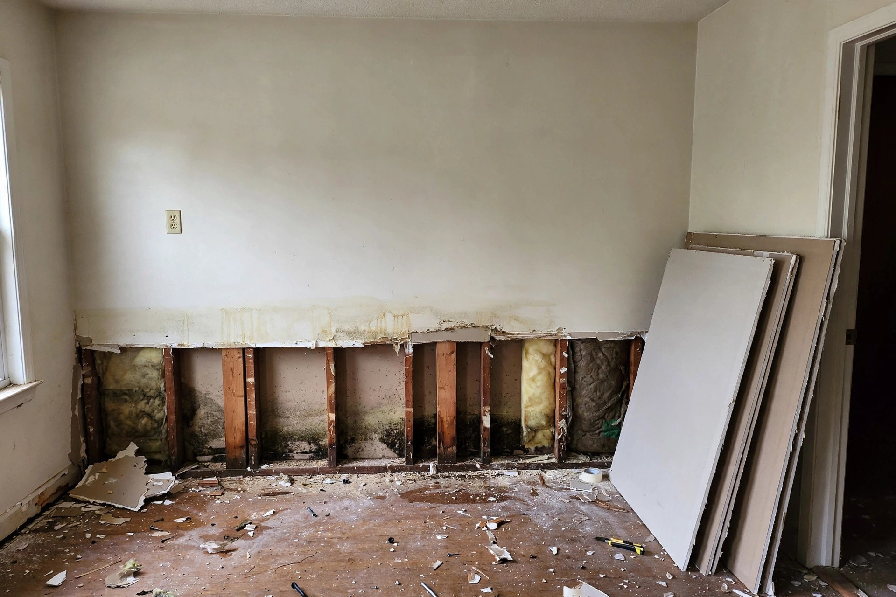
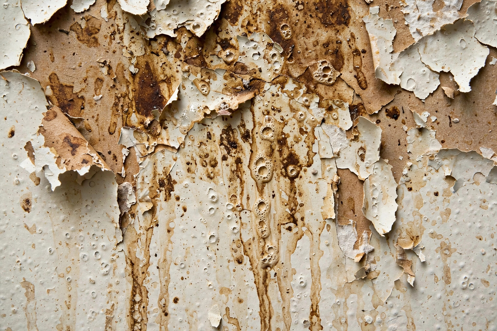

Home / Water Damage / Drywall
Boise, Idaho · Cut, dry, rebuildDrywall ruined by water? We make it disappear.
Flood cuts, full removal, drying to standard, then rebuild with texture and paint matched so well you'll forget where the damage was.

A laundry room flood cut
Consider a Boise ranch where the washing machine supply hose burst while nobody was home. Water spread across the laundry room and wicked two feet up the drywall on two walls. The repair: a 2-foot flood cut on both walls, wet insulation removed, three days of drying, then new board, tape, knockdown texture to match, and paint. The homeowner calls Boise's Building Division at (208) 608-7070 to confirm no permit is needed for the like-for-like repair — a quick call that avoids headaches.
Repair or replace? How we decide
Every water-damaged wall gets the same honest assessment. Here's the framework we use:
Briefly damp, dried fast
Drywall that got wet and dried within 48 hours, with no swelling or mold, can usually stay with monitoring.
Wicking from below
Water wicked up from the floor gets a flood cut — remove the wet band, keep the dry upper wall.
Soggy, sagging, or moldy
Drywall that's soft, crumbling, or colonized comes out entirely. No salvaging compromised board.
Drywall repair questions
Can wet drywall be dried, or does it always need replacing?
It depends on how wet and for how long. Drywall that got briefly damp and dried within 48 hours can sometimes stay. Drywall that stayed wet, sagged, or grew mold needs to come out — the paper facing doesn't recover.
What is a flood cut?
A straight horizontal cut, usually 2 or 4 feet up from the floor, removing only the wet lower section. It's the standard approach for wicking and minor flooding — less tear-out, faster rebuild, cleaner finish.
Will the new drywall match the old texture?
Yes — we match knockdown, orange peel, or smooth finishes to the existing wall, then prime and paint. On large repairs we feather the texture so the patch disappears.
Do I need a permit for drywall repair in Boise?
Minor repairs typically don't. Larger rebuilds involving electrical or plumbing in the wall might. Boise's Building Division at (208) 608-7070 can confirm for your specific job — we're happy to check with you.
How long does drywall repair take?
A single flood-cut wall: 2–3 days including drying time before the new board goes up. Multiple rooms: up to a week. Paint needs its full cure time before the room goes back to normal use — we don't rush that final step.
How a drywall repair runs
Map the wet area
Moisture meters find how far the water wicked up. We mark the cut line above the highest wet reading — never guess.
Cut and remove
Straight flood cut, debris out, baseboards carefully removed for reuse where possible.
Dry the cavity
Studs and insulation get dried to standard with air movers. New board never goes up on wet framing.
Rebuild and finish
New drywall, tape, texture match, prime, paint. The wall looks like the leak never happened.
Signs your drywall needs attention
Not every water spot means replacement. Here's how to read what you're seeing:
- Brown or yellow staining that grows over days — active or recent leak.
- Soft spots that dent with light finger pressure — the gypsum is compromised.
- Bubbling or peeling paint — moisture trapped behind the finish.
- A musty smell near the wall — mold may be growing on the paper backing.
- Baseboards pulling away or swelling — water wicked up from the floor.
- Visible mold on the surface — the wall cavity behind it needs checking too.
If you see two or more of these on the same wall, call before it spreads. A quick moisture reading tells us exactly where things stand.

Let's look at your walls
Wet drywall doesn't fix itself — but a quick assessment tells you exactly what it needs. Call and describe what happened; we'll give you a straight, honest, no-pressure answer about what your walls actually need.